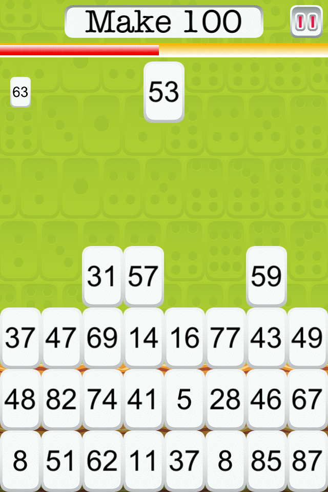
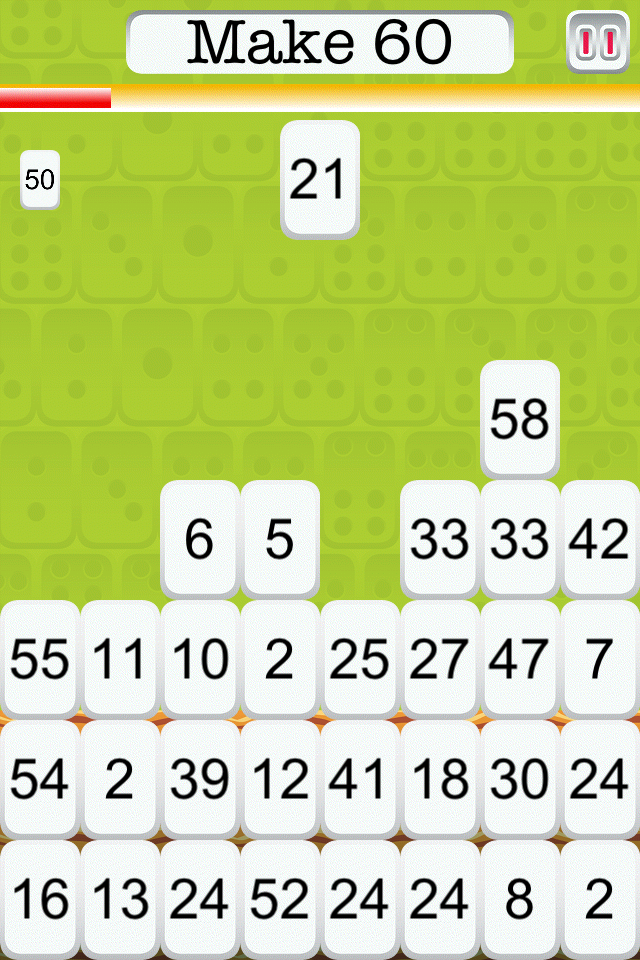
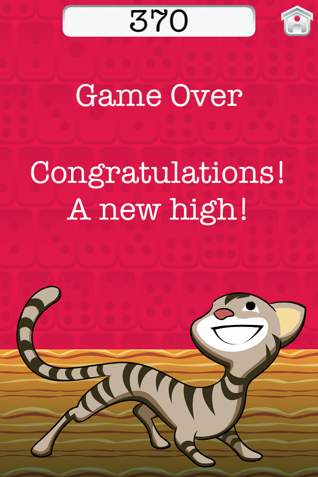

Make 10 Plus
A free math game for your iPhone
Have fun while doing math!
How fast and often can you Make 10 by...

...tapping the tile that adds up to 10...
...before the wall of tiles reaches the top?
Learn and improve math skills with simple, fun and engaging play.
Not yet ready for adding numbers? Start with Mahjong dots and count them to Make 10. Or change the sum to a number as small as 5.
18 + 6 =
18 + (2 + 4) =
(18 + 2) + 4 =
20 + 4 =
24
207 + 728 =
(200 + 7) + 728 =
(200 + 728) + 7 =
928 + (2 + 5) =
(928 + 2) + 5 =
930 + 5 =
935
18 + (2 + 4) =
(18 + 2) + 4 =
20 + 4 =
24
207 + 728 =
(200 + 7) + 728 =
(200 + 728) + 7 =
928 + (2 + 5) =
(928 + 2) + 5 =
930 + 5 =
935
Knowing how to Make 10 is the key for adding bigger numbers in your head. Teachers call this mastering the Make 10 fact families.
Already a champ at Make 10? Change the sum or start at a faster level for a bigger challenge in finding the missing addends.
But it's not just for kids. You, too, can enjoy jogging your brain!

How fast can you make change for a dollar? Set to Make 100.

How about how many minutes until the hour? Set to Make 60.

Who will set the high score on your phone? Play to find out!
And did I mention it's free?
About us
Bess Siegal designed and developed Make 10 Plus.
- I'm a programmer and the mom of 3 young girls who love learning and games. I wrote this game for them, and it's pretty neat to watch them play and actually see them improving and challenging themselves. And they really enjoy it! This game is free so that you and your kids can also get educational value out of a fun (ad-free) activity.
- I created Make 10 using Cocos2d-iphone, created its sound effects using Audacity and release the code as open-source, too, under the Apache 2.0 license.
- Special thanks to Zack Grossbart for showing me the ropes, Yancey Labat for the amazing artwork and James Siegal in general.
- Got any feedback for me? Email me at bess.siegal@gmail.com.
Yancey Labat created the artwork for Make 10 Plus.
- Yancey got his start at Marvel Comics and has illustrated many books for children, including the Worst-Case Scenario Ultimate Adventure series and a giant picture book called "How Many Jelly Beans" (Chronicle Books, 2012).
- He grew up in Louisiana, Senegal, and Maryland and now lives in Ithaca, New York with his wife and daughters.
- Visit Yancey online at www.yanceylabat.com.
Version 1.1.1